据英媒报道，今日，英国将迎来近期暴乱中“最严重的一天”。据警方消息人士透露，预计今晚将有超过130场抗议和反示威活动，覆盖全英大部分地区。包括在此期间一直未发生骚乱的伦敦，已有多个地点被列为袭击目标。
英媒称，据不完全统计，在过去几天的骚乱中已有100多名警察受伤，同时非常令人深感不安的是，一些年仅11岁的儿童也参与到极右翼暴乱之中。为了进一步控制骚乱，41支警队已动员6000名警察组成军队，在英国30个地区待命，极右翼暴徒将面临“恐怖主义罪行”指控。
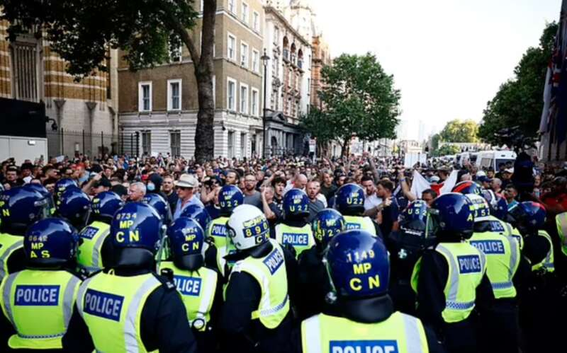
今早，各家英媒在头版也已将目光聚焦在这个气氛极具紧张的周三。而今日这种紧张情绪的源头则是昨晚一份被泄露的袭击地点名单。
《泰晤士报》称，这份名单在一个拥有超14000名成员的社媒群组中发布，名单列出了英格兰各地移民律师、慈善机构和咨询中心的详细信息。极右翼煽动者在该群中发布指示，告诉暴徒在特定时间袭击39个地点、如何制造汽油弹，并发布呼吁“谋杀英国少数族裔和政府官员”的言论。
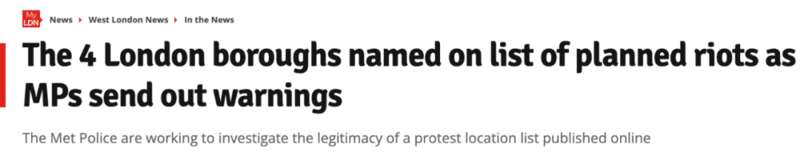
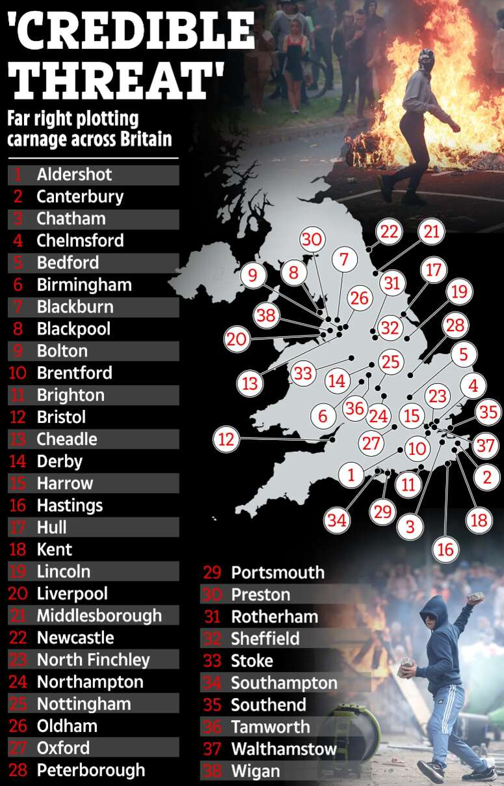
△39个地点名称如上图，其中伦敦4个行政区被列入其中，包括伦敦西北部的哈罗（Harrow）、伦敦西部的豪恩斯洛（布伦特福德Brentford）、伦敦北部的芬奇利（North Finchley）以及伦敦东部的沃尔瑟姆斯托（Walthamstow）。《每日快报》以英国改革党领袖奈杰尔·法拉奇的警告作为头版标题：“英国正处于危险时刻”。
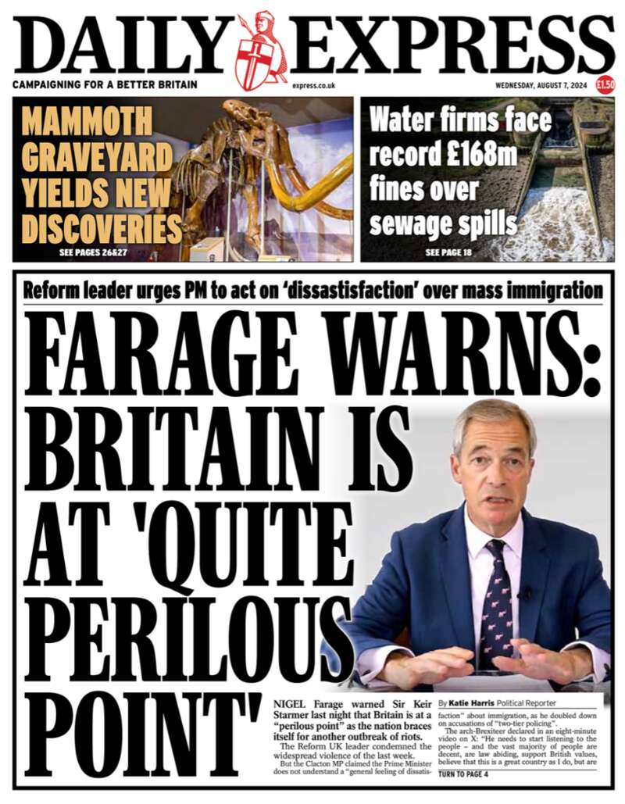
《泰晤士报》称，极右翼抗议者即将袭击英国各地30多个移民咨询中心，数千名警察已部署。
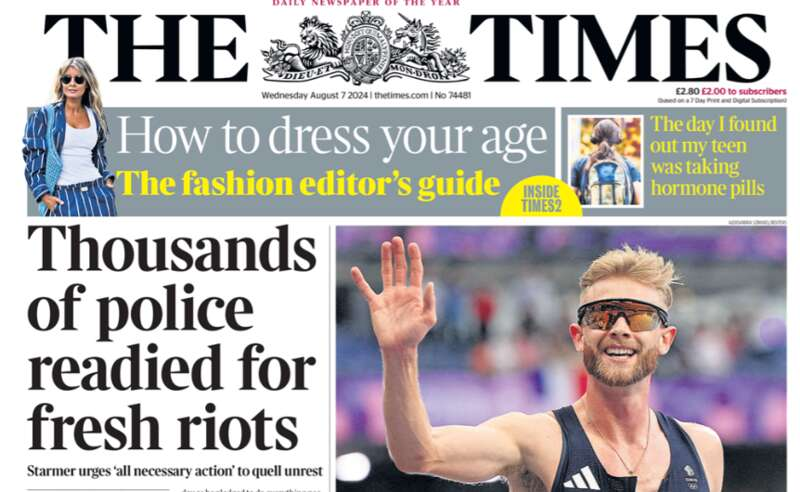
《每日电讯报》、i报称，极右翼暴徒可能被指控犯有恐怖主义罪行，警方今日准备迎接“最糟糕的严重混乱”。
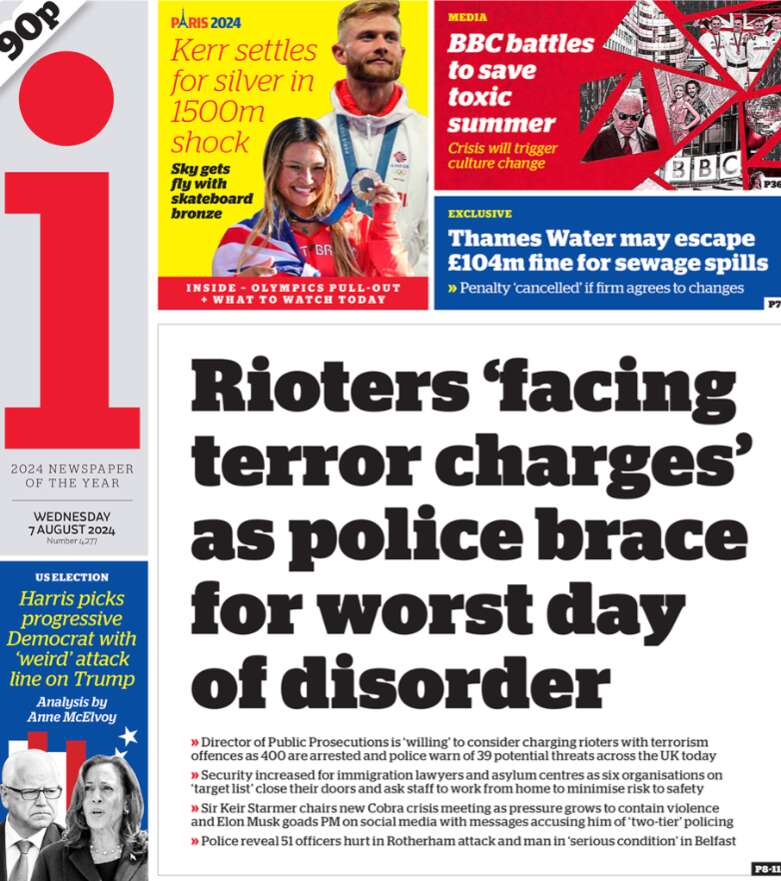
《每日镜报》则援引英国内政大臣伊薇特·库珀的警告称，“暴徒可能面临最高10年的监禁”。
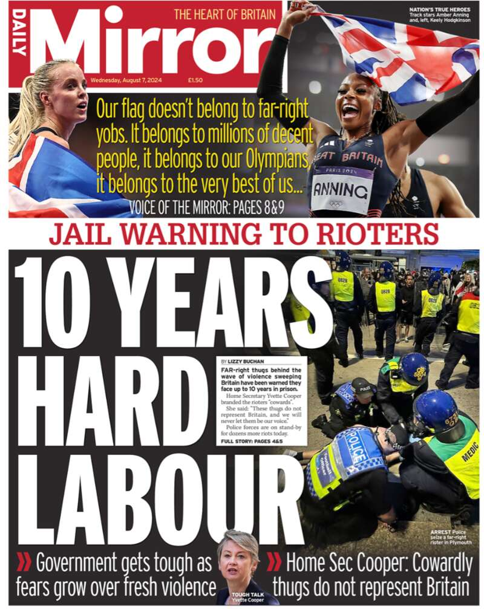
据报道，在一条泄露的信息中：抗议活动组织者宣传要求参与者佩戴面罩、穿连帽衫，并将手机留在家中，图片配文“白人与激进分子”。
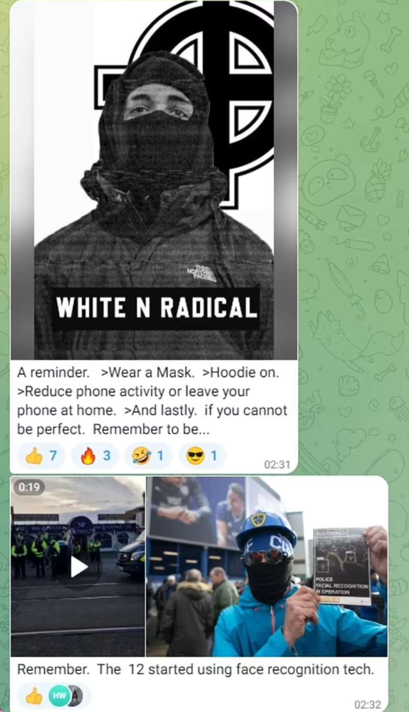
亚裔商店遭袭击
太阳报在今日报道中指出，随着骚乱升级，反移民情绪浪潮在社交媒体上持续蔓延，少数族裔也成为袭击对象。该报称，昨晚，贝尔法斯特的一家亚裔商店遭到暴徒袭击，货架上的物品被洗劫一空，店铺内部被烧毁。
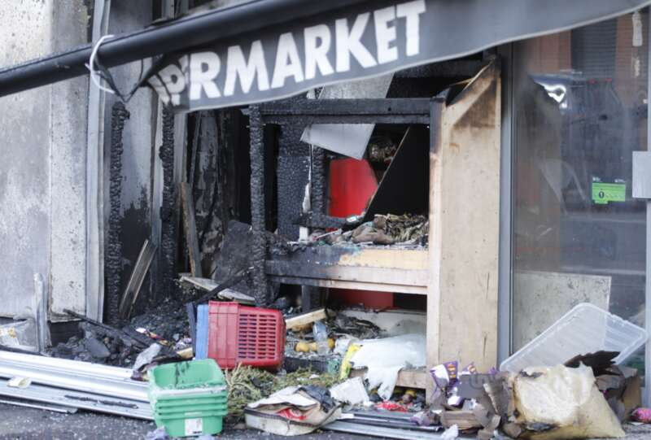
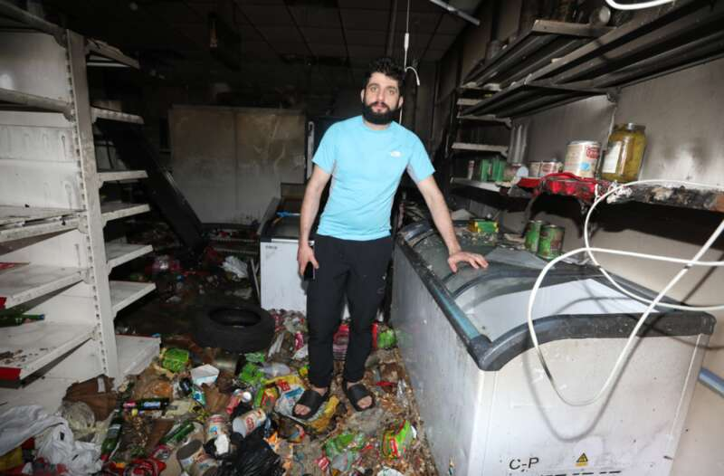
△一名当地居民站在遭袭击的商店中
伦敦一些地点也将成为袭击目标
伦敦市长萨迪克·汗今日在社交媒体X上表示，他承认近期的骚乱导致穆斯林和少数族裔社区感到“害怕和恐惧”。据他了解，一个极右翼组织计划袭击伦敦的一些地点，他正在与警方合作保护目标建筑。
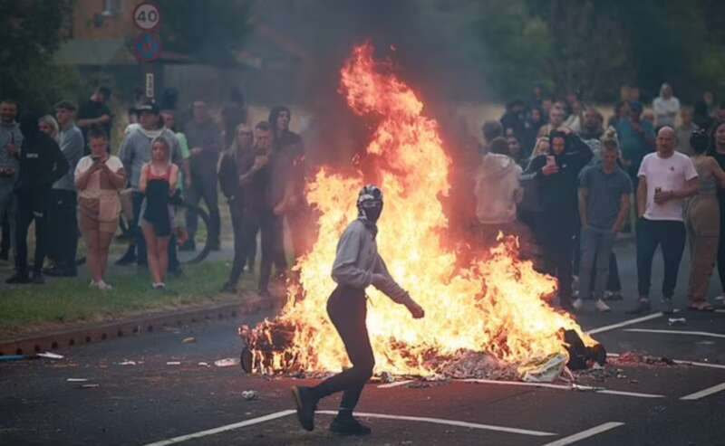
同时，据每日邮报报道，由于英国将迎来更多“无政府状态般的混乱”，人们害怕出门工作，英国一些全科门诊、医院、酒吧、商店、办公室被迫紧急关门。
今早，英媒在伦敦北部地区拍摄的画面显示，当地商铺已用木板将门窗玻璃封死，防止在今晚的抗议活动中遭到袭击。
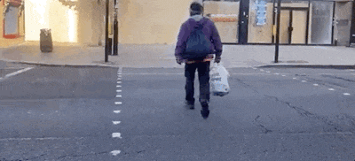
暴徒将面临“恐怖主义罪名”指控
英国皇家检察署检察总长帕金森表示，检方将考虑引渡被指从国外煽动暴力的人，并指控一些嫌疑人犯有恐怖主义罪行。
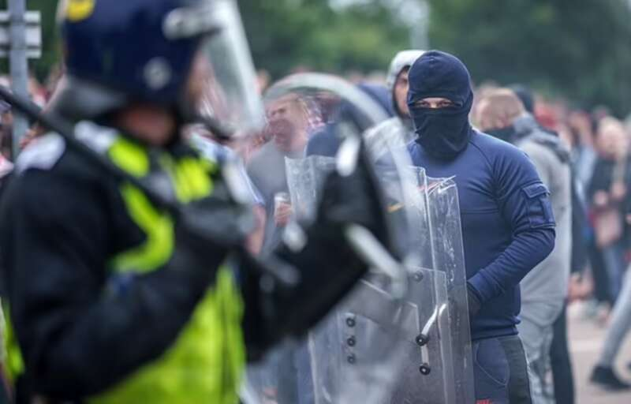
英国首相斯塔默周二再次召开紧急应对会议，并表示骚乱的幕后黑手将“面临法律的全面制裁”。他表示，“暴力不是抗议，是骚乱，需要被当作犯罪活动来对待”。
据报道，截至目前，在过去几天的骚乱中，警察已经逮捕了400多人，已有约100人因骚乱受到指控，预计将于今日出庭。英国政府希望通过快速量刑对暴徒能够起到威慑作用。
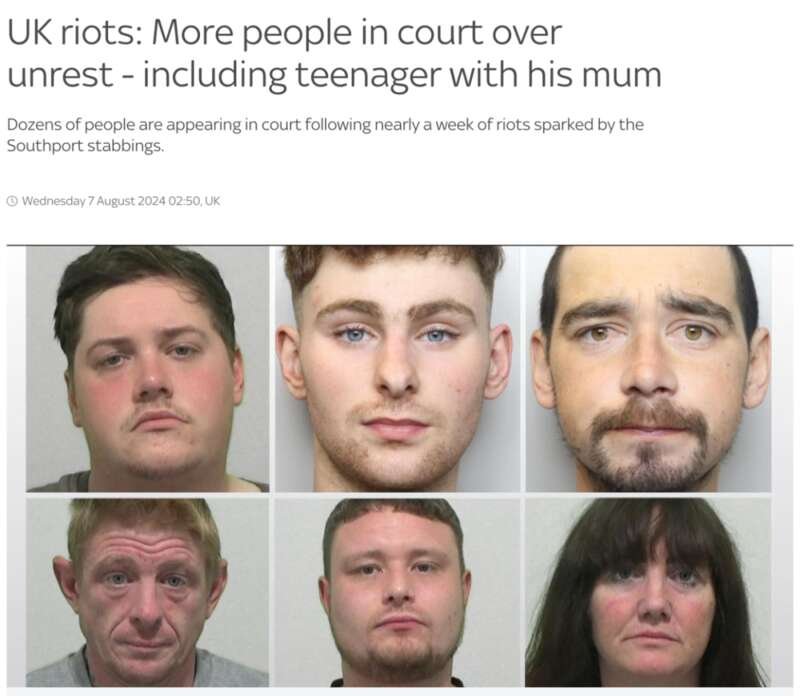
△英国警方公布了部分被捕者的照片
据天空新闻最新消息，在被捕的人中，三名来自默西塞德郡的男子因在绍斯波特制造暴力骚乱、袭警，今日已被法院分别被判处三年有期徒刑、30个月监禁和20个月监禁。
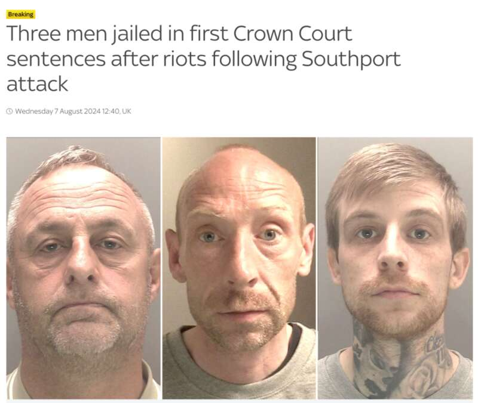
△三名被判入狱男子照片已被公布
被捕骚乱者最小年仅11岁，低龄犯罪引发政府担忧
英媒称，值得注意的是，被捕的参与骚乱者年龄最小的年仅11岁，低龄犯罪引发政府担忧。
与此同时，昨晚，贝尔法斯特警方连续第三晚处理“袭击、刑事破坏和纵火案”，又逮捕了六人，包括一名年仅14岁的男孩，和两名16岁男孩，另外三名分别为26岁、28岁和41岁的男子也因涉嫌刑事破坏罪被捕。
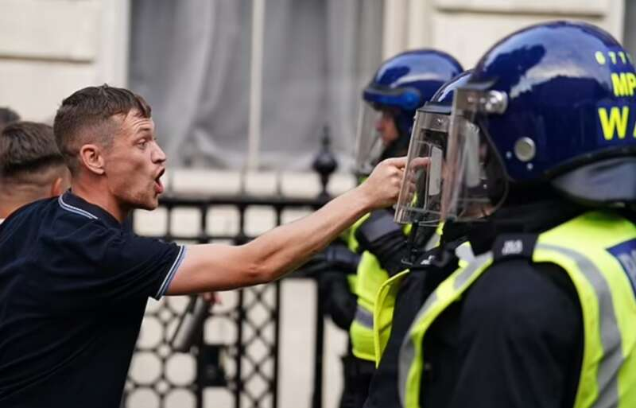
此前，在周一晚上的抗议活动发生后，德文郡和康沃尔郡警方指控六人犯有暴力骚乱罪，受到指控的六人包括四名成年人和两名 17 岁的男孩，他们将于今天晚些时候在普利茅斯地方法院出庭受审。据悉，当天的冲突导致两名警察受伤，两名民众被送往医院。
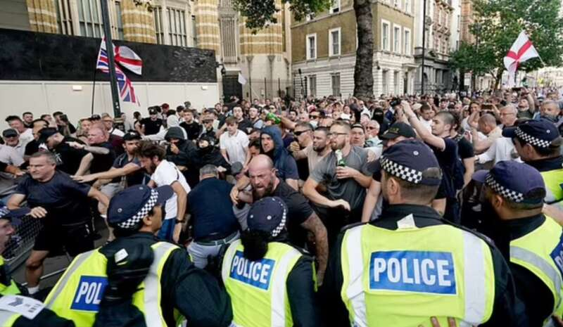
超百名警察受伤
英媒称，实际上，据不完全统计，自上周二骚乱爆发以来，已有100多名警察受伤，警犬、军马也受到不同程度袭击。
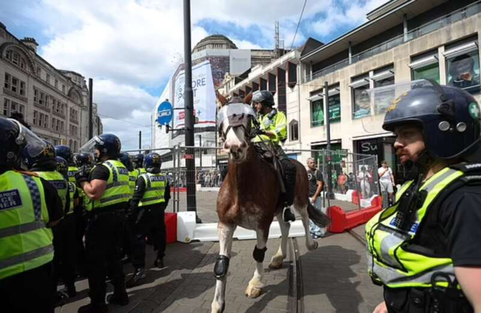
目前警方仍在调查受伤警官的人数。昨晚，南约克郡警方表示，仅在周日罗瑟勒姆快捷假日酒店外爆发的暴力冲突中，就有51名警察受伤，抗议人群向警察投掷砖块、椅子、路障等物品，导致一些警察骨折、脑震荡、头部受伤。
默西塞德郡此前报道称，在上周二的绍斯波特骚乱中有53名警察受伤。
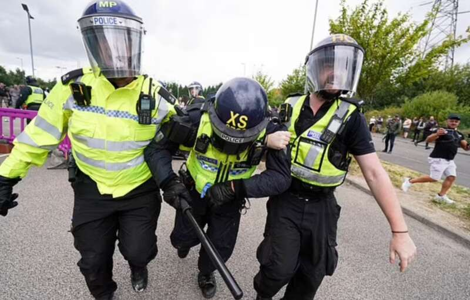
警方消息人士称，英国政府已动员近6000名警员来应对未来几天的骚乱。
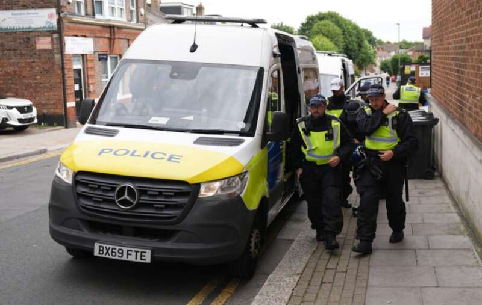
△今日伦敦警察在北芬奇利巡逻
BBC在分析中指出，“绍斯波特袭击事件只是一个导火索，而不是引发持续骚乱的根本原因”，分析人士认为，过去很长一段时间，英国人对移民水平过高一直存在着强烈的不满，因此3名儿童遇袭后死亡成为此次持续暴乱的催化剂。
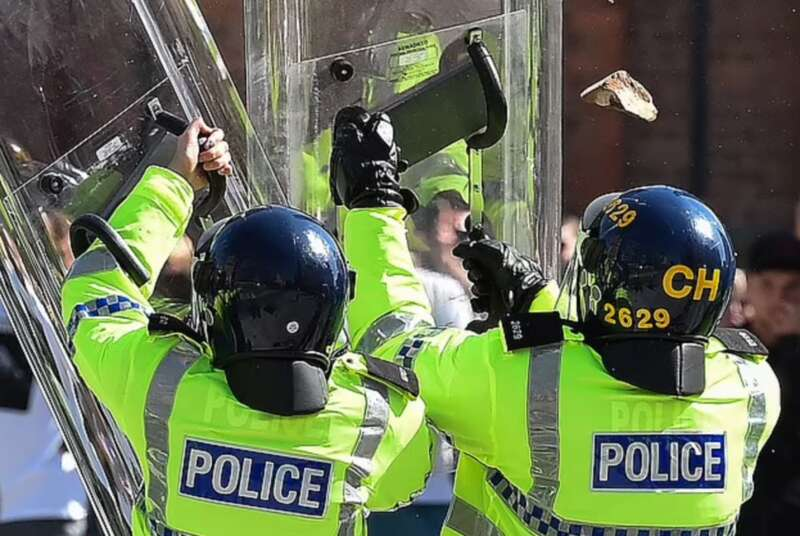
据悉，泰国成为最新一个向其公民发出前往英国警告的国家。泰国驻伦敦大使馆警告，“英国境内或前往英国的泰国人应提高警惕，避免前往发生抗议活动的地区”。此前，其他已向其公民发出前往英国旅行警告的国家包括尼日利亚、马来西亚、印度、澳大利亚和印度尼西亚。